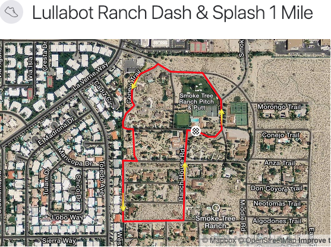
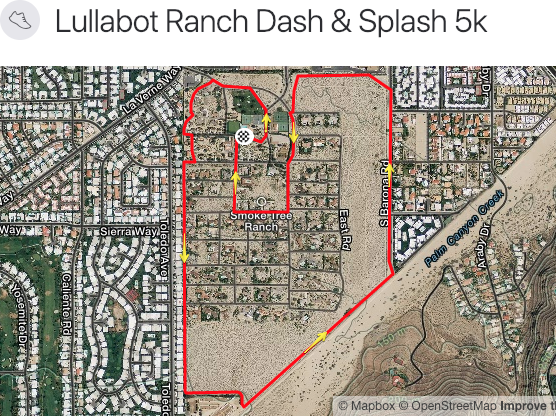

Date and Start Times
Tuesday at 1:15pm
Eat a light lunch, then make your way to the pool deck! Start times
will be staggered so whether you are walking or running,
the goal is to have as many people coming to the finish line at
the same time!
Dash & Splash!
With three options to choose from, pick the course the best suits
you...literally! We end at the pool so you can jump right in and
cool off before the 3pm activities! Spectators are encouraged to
cheer and high-five as much as possible.
Course Markings
The course will be marked in some way, either with chalk or hanging
markings. Either way, please familiarize yourself with the course
before you run. Stay tuned!
Aid Stations
To minimize disruption of the residents, aid stations will not
be placed around the ranch. Carry water with you if you think
you'll need it. Take into account the heat, and remember, it's
a fun run!
Course Safety
Many of the routes follow roads, so beware of cars. Runner etiquette
is run on the left side of the road (against traffic). For those
on the 5k course, ensure you have plenty of water and watch for
wildlife in the brush.
Volunteers
If you would rather support your fellow 'Bots on their quest, we'll
need a few volunteers to check participants in and mark finishers,
take photos, hand out water, and cheer everyone on as the approach
the final stretch and cross the finish line.
Strava
We use Strava to map the routs. Strava is a free community of active people. You can use just about any GPS enabled device to sync your activities, use their free app, or manually enter them.
You don't have to use Strava, but we do have a Lullabot Fit Club where we share our runs, rides, and rows, and it's always more fun with more people to give you kudos.

1 Mile Course
The one mile course begins outside the patio gates in front of Disney hall and follows Conejo Trail around the golf course onto Moronga Trail toward the NW entrance. Turn left on W Rd, then stay to the right wherever possible to keep along the perimeter. Make a left at Algodones Trail, then a left on Ranch House road to cruise your way into the finish.

2 Mile Course
The two mile course follows the same route as the 1 mile course to get the the western perimeter of the ranch. Take W Rd along the western perimeter until you reach the last road: San Jacinto Trail. Take San Jacinto to the left, then bear slightly to the right at Middle Rd to stay on San Jacinto. This will turn into E Rd. Keep to the right on E Rd, then make a left on Cocopah Trail. First right on Middle Rd, then a left on Algodones Trail, and a right on Ranch House Rd to cruise into the finish.

5k Course
Follow the same route as the 1 and 2 mile courses to get onto W Rd. Follow W Rd past the last road where it becomes the perimeter trail. Take the perimeter trail around the ranch until it meets up with Middle Rd, the main road. Stay on Middle Rd then make a right at Algodones Trail, then a right onto Ranch House Rd to cruise into the finish.